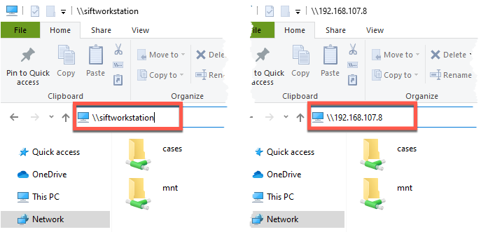
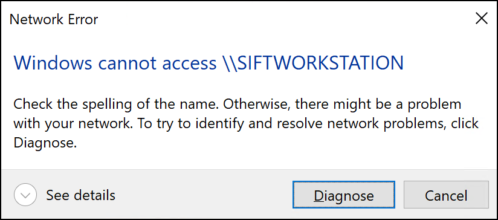

Windows File Sharing Issues
During your class, you may wish to share or copy files between your host system and a virtual machine or between virtual machines. One method of doing this is to use Microsoft Windows's native file sharing features, known as SMB. Tools that provide SMB functionality are available for Windows, macOS, and Linux operating systems. If you wish to use SMB to share files from a Windows client system, you'll need to follow the steps in this document to adjust the security settings. Using a macOS or Linux client system does not require these measures.
Using UNCs for SMB Sharing
To connect from one Windows system to another running SMB, you'll use UNC syntax with the destination system's hostname or IP address:
\\<%DESTINATION_SYSTEM_HOSTNAME%>\\\<%DESTINATION_SYSTEM_IP_ADDRESS%>\

If, after attempting to access the destination system using both the hostname and IP address UNCs, you receive the following error message, you will need to change your settings on the Microsoft Windows client system to enable SMB functionality.

First Troubleshooting Approach
The following PowerShell one-liner is often all that is needed to fix the above error. Run this command before doing moving forward with any other steps.
Run this command from an Administrator PowerShell Terminal.
Command lines
Set-ItemProperty -Path "HKLM:\SYSTEM\CurrentControlSet\Services\LanmanWorkstation\Parameters" AllowInsecureGuestAuth -Type DWORD -Value 1 -Force
If the command runs successfully, no results will be displayed in the PowerShell terminal.
Close and restart Windows Explorer and re-test your connection to file share. If you still receive the error message, see the additional troubleshooting steps below.
Additional Troubleshooting Approaches
If SMB sharing still is not working after running the above PowerShell one-liner, one or more of the following steps may be required.
-
Verify Lanman Workstation
AllowInsecureGuestAuthSetting This PowerShell command will display the current Lanman WorkstationAllowInsecureGuestAuthregistry key. This MUST be set to1for Windows File Sharing to function.Run this command from an Administrator PowerShell Terminal.
Command lines
Get-ItemProperty -Path "HKLM:\SYSTEM\CurrentControlSet\Services\LanmanWorkstation\Parameters" | format-list -property AllowInsecureGuestAuthExpected Results
PS C:\Users\sansforensics> Get-ItemProperty -Path "HKLM:\SYSTEM\CurrentControlSet\Services\LanmanWorkstation\Parameters" | format-list -property AllowInsecureGuestAuth AllowInsecureGuestAuth : 1If this returns a value of
0instead, run the PowerShell one-liner in the First Troubleshooting Approach section above. -
Verify the destination machine's IP address
The network interface name can vary from system to system, and some systems will have more than one interface. You will need to know which interface is being used for SMB access. Your TA, SME, or instructor can assist you if you're unsure which interface is being used.
Log in to the destination system.
-
If the destination system is running Linux:
Command lines
ip addressNotional results
sansforensics@siftworkstation: ~ $ ip address 1: lo: <LOOPBACK,UP,LOWER_UP> mtu 65536 qdisc noqueue state UNKNOWN group default qlen 1000 link/loopback 00:00:00:00:00:00 brd 00:00:00:00:00:00 inet 127.0.0.1/8 scope host lo valid_lft forever preferred_lft forever inet6 ::1/128 scope host valid_lft forever preferred_lft forever 2: ens33: <BROADCAST,MULTICAST,UP,LOWER_UP> mtu 1500 qdisc fq_codel state UP group default qlen 1000 link/ether 00:0c:29:3a:47:73 brd ff:ff:ff:ff:ff:ff inet 192.168.107.8/24 brd 192.168.107.255 scope global dynamic noprefixroute ens33 valid_lft 85518sec preferred_lft 85518sec inet6 fd15:4ba5:5a2b:1008:35c7:81c:372d:e121/64 scope global temporary dynamic valid_lft 604786sec preferred_lft 86054sec inet6 fd15:4ba5:5a2b:1008:76b7:6100:3d57:95e9/64 scope global dynamic mngtmpaddr noprefixroute valid_lft 2591985sec preferred_lft 604785sec inet6 fe80::ceae:7a20:f025:62b6/64 scope link noprefixroute valid_lft forever preferred_lft forever 3: docker0: <NO-CARRIER,BROADCAST,MULTICAST,UP> mtu 1500 qdisc noqueue state DOWN group default link/ether 02:42:24:25:69:75 brd ff:ff:ff:ff:ff:ff inet 172.17.0.1/16 brd 172.17.255.255 scope global docker0 valid_lft forever preferred_lft foreverIn this case, the interface
ens33is the only one used for the VM's services and its IP address is192.168.107.8, indicated by the highlighted line:inet 192.168.107.8/24 ... -
If the destination system is running Windows:
Command lines
ipconfigNotional results
C:\Users\sansforensics> ipconfig Ethernet adapter Ethernet: Connection-specific DNS Suffix . : sansgear.com IPv6 Address. . . . . . . . . . . : fd15:4ba5:5a2b:1008:9c14:e101:232:5a1c Temporary IPv6 Address. . . . . . : fd15:4ba5:5a2b:1008:8b4:b370:203b:a766 Temporary IPv6 Address. . . . . . : fd15:4ba5:5a2b:1008:a426:af82:6efc:488 Link-local IPv6 Address . . . . . : fe80::9c14:e101:232:5a1c%12 IPv4 Address. . . . . . . . . . . : 192.168.107.2 Subnet Mask . . . . . . . . . . . : 255.255.255.0 Default Gateway . . . . . . . . . : fe80::472:1446:5c3d:7670%12 192.168.107.1In this case, the IP address is
192.168.107.2, indicated by the highlighted line:IPv4 Address. . . . . . . . . . . : 192.168.107.2
-
-
Allow File and Print Sharing through the firewall
The simplest approach is to turn off the Windows Firewall entirely while you are in the classroom environment. The following command will accomplish this.
Run this command from an Administrator PowerShell Terminal or Administrator Command Prompt.
Command lines
netsh advfirewall set allprofiles state offExpected results
PS C:\Users\sansforensics> netsh advfirewall set allprofiles state off Ok.To re-enable the firewall after class, run the same command with
oninstead ofoff.If you are not able to disable the firewall completely, you can open only the file and print sharing ports.
- Open Control Panel, click System and Security, and then click Windows Firewall.
-
In the left pane, click Advanced settings, and in the console tree, click Inbound Rules.
-
Under Inbound Rules, locate the rules
File and Printer Sharing (NB-Session-In)andFile and Printer Sharing (SMB-In). -
For each rule, right-click the rule, and then click
Enabledcheckbox andAllow the connectionoption. Click the "OK" button.
-
Ensure SMB2 is enabled
SMB version 2 (SMB2) is required for file sharing and is typically enabled by default. The following command will ensure SMB2 is enabled and will have no effect if it is alread enabled.
Run this command from an Administrator PowerShell Terminal.
Command lines
Set-ItemProperty -Path "HKLM:\SYSTEM\CurrentControlSet\Services\LanmanServer\Parameters" SMB2 -Value 1 -ForceIf the command runs successfully, no results will be displayed in the PowerShell terminal.
-
Verify all SMB configuration options
If you have completed all of the steps above and are still unable to use the SMB service, the following command will produce output that may be helpful in more exhaustive troubleshooting.
Run this command from an Administrator PowerShell Terminal.
Command lines
Get-SMBServerConfigurationNotional results
PS C:\Users\sansforensics> Get-SMBServerConfiguration AnnounceComment : AnnounceServer : False AsynchronousCredits : 64 AuditSmb1Access : False AutoDisconnectTimeout : 15 AutoShareServer : True AutoShareWorkstation : True CachedOpenLimit : 10 DurableHandleV2TimeoutInSeconds : 180 EnableAuthenticateUserSharing : True EnableDownlevelTimewarp : False EnableForcedLogoff : True EnableLeasing : True EnableMultiChannel : True EnableOplocks : True EnableSecuritySignature : False EnableSMB1Protocol : True EnableSMB2Protocol : True EnableStrictNameChecking : True EncryptData : False IrpStackSize : 15 KeepAliveTime : 2 MaxChannelPerSession : 32 MaxMpxCount : 50 MaxSessionPerConnection : 16384 MaxThreadsPerQueue : 20 MaxWorkItems : 1 NullSessionPipes : NullSessionShares : OplockBreakWait : 35 PendingClientTimeoutInSeconds : 120 RejectUnencryptedAccess : True RequireSecuritySignature : False ServerHidden : True Smb2CreditsMax : 2048 Smb2CreditsMin : 128 SmbServerNameHardeningLevel : 0 TreatHostAsStableStorage : False ValidateAliasNotCircular : True ValidateShareScope : True ValidateShareScopeNotAliased : True ValidateTargetName : True
{kind=link}
{kind=link}
{kind=link}
Running Administrator Terminal/Prompt
The steps in this document may require either an Administrator PowerShell Terminal or a Windows Command Prompt. To access these, use the following instructions.
-
Administrator PowerShell Terminal
-
Administrator Command Prompt
{kind=link}
{kind=link}
{kind=link}
{kind=link}